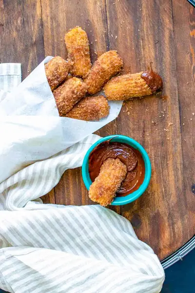

Baked Vegan Churros With Chocolate Sauce (Gluten-Free!)

Ingredients
- 1 cup fine grain almond flour
- ¼ cup brown rice flour
- 2 tablespoons tapioca starch
- ½ cup cane sugar
- ½ teaspoon cinnamon
- ¼ teaspoon sea salt
- ¼ cup water or dairy-free milk (see note)
- 2 tablespoons apple sauce
- ½ cup dairy-free butter (see note)
- ½ cup cane sugar
- 2 tablespoons cinnamon
- melted chocolate
- vegan caramel
Steps
- Preheat oven to 350 degrees F / 120 C.
- Add flours, starch, sugar, salt and cinnamon in a bowl. Whisk to mix and break up any clumps.
- Make a little well in the middle and add in the apple sauce and water/milk. Mix again to combine and get a smooth batter.
- Allow to set in the fridge for at least 10 minutes. The longer it sets the more firm your dough so the round like shape will keep better when baked.
- Fill a pastry bag with a large tip, or a plastic bag with the edge cut off. You want at least a 1 inch hole, but any size will work as long as you remember you will get less or more depending on the size.
- Squeeze out pieces onto a parchment lined baking sheet. I made mine about 3 inches long. Use a knife to cut off the batter in between pieces.
- Bake for 15 minutes, until golden. To keep them from getting one flat edge, start flipping them on each side starting at about 5-6 minutes when they have baked enough to turn without falling apart. You can turn on all the sides by turning every few minutes until you get to 15 or they are golden on each side.
- Meanwhile, melt the butter in a bowl. Then mix the cinnamon and sugar in another bowl.
- Once baked, allow the churro pieces to cool. This will help them set more.
- One by one, dip them in the butter then roll in the sugar mixture.
- Enjoy as is or dip in melted chocolate or caramel.
Recipe by Anjali Shah, from The Picky Eater. Saved here for personal use; the original has the full notes, tips and photos. Open original